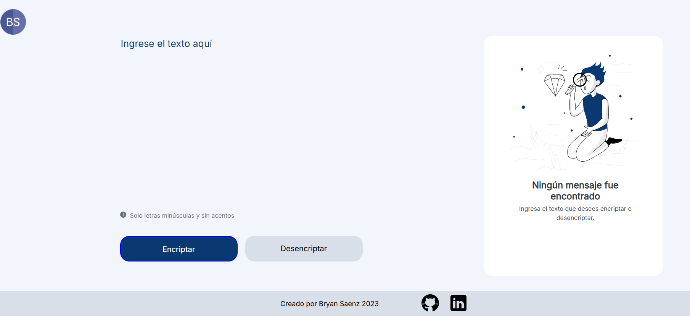
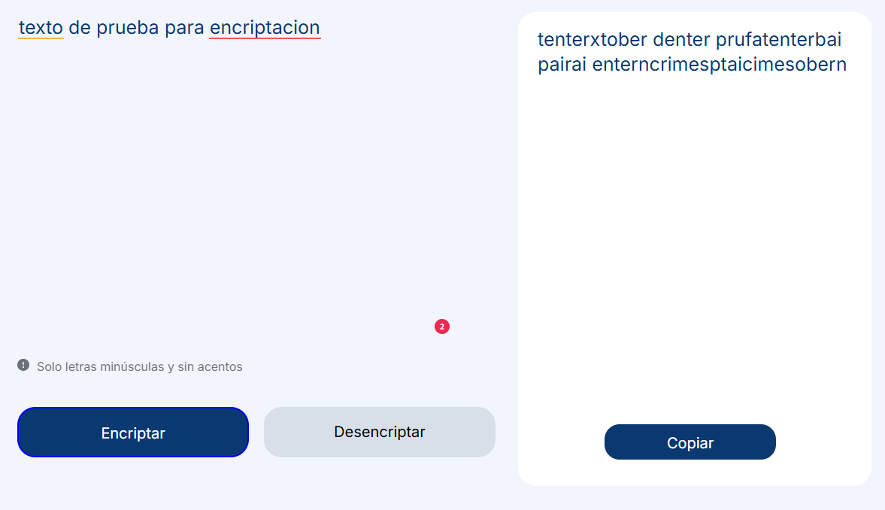
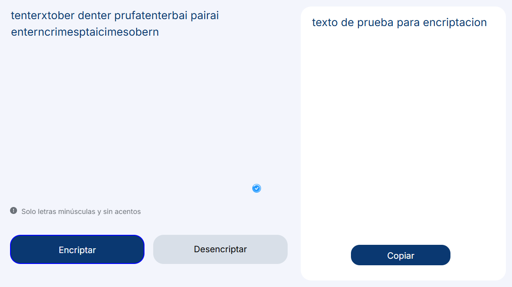

Encriptador de Texto



📝 Descripción
El Encriptador de Texto es una aplicación web desarrollada en HTML, CSS y JavaScript que permite cifrar y descifrar mensajes de forma sencilla utilizando un algoritmo de sustitución de caracteres.
Diseñado como un proyecto introductorio, este encriptador se enfoca en la lógica de programación y la interacción con el DOM de manera dinámica.
⚙️ Funcionalidades Principales
- Encriptar texto con reglas simples de sustitución.
- Desencriptar el texto original.
- Copiar el resultado al portapapeles con un solo clic.
- Interfaz amigable y completamente responsiva.
🚀 Buenas Prácticas Aplicadas
- Uso de event listeners para interacción con botones.
- Separación clara de funciones de encriptado y desencriptado.
- Validación de entrada y control de errores básicos.
- Estilos limpios y adaptables con CSS personalizado.
🛠️ Tecnologías Utilizadas
HTML5
CSS3
JavaScript